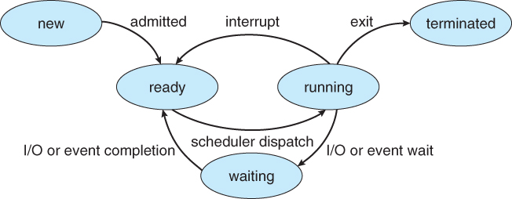

Running
The process is using the CPU right now.
A process is a running program. The OS switches between processes so quickly that many seem to run at once, even on one CPU core. Each switch is called a context switch.

The process is using the CPU right now.
The process could run, but the CPU is busy with another one.
The process is waiting for something, such as a file or keyboard input.
The scheduler chooses which ready process runs next. Round-robin gives each process a short turn, and priority scheduling lets important processes go first. A new process can start when a program is launched or when a running process calls fork().